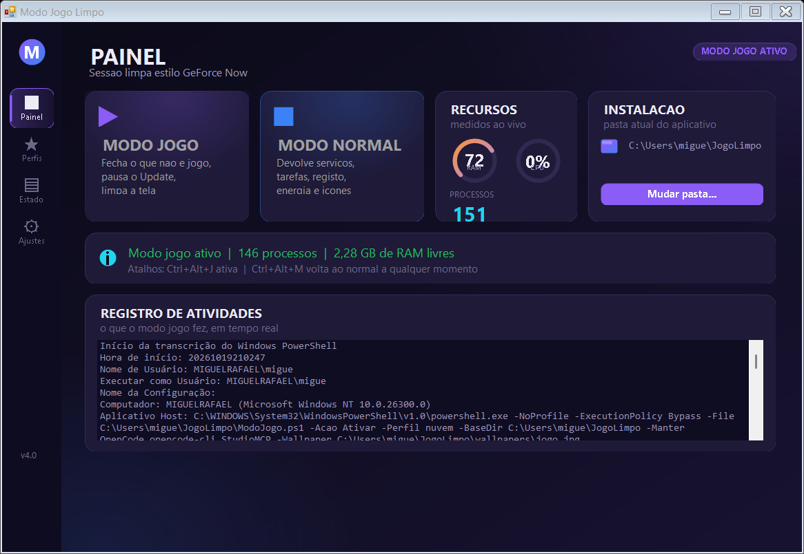
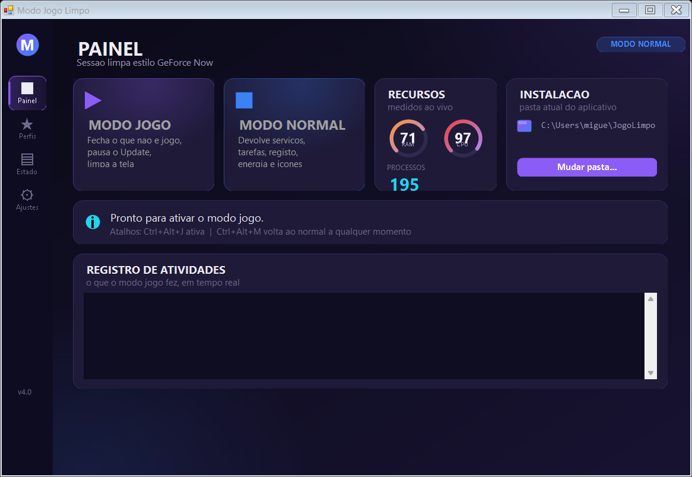
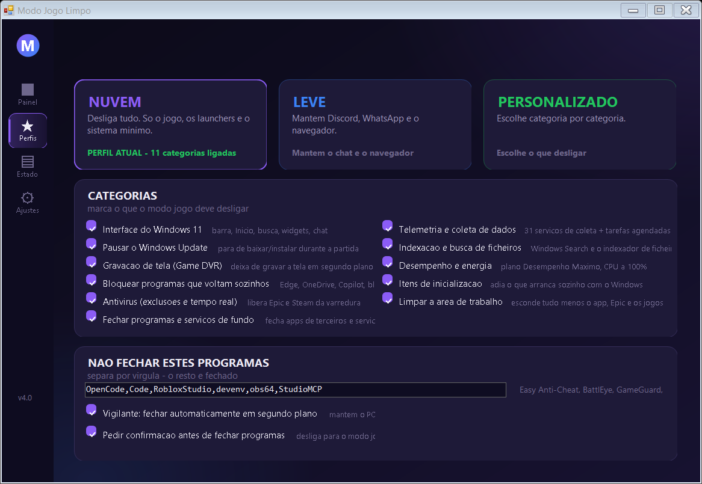
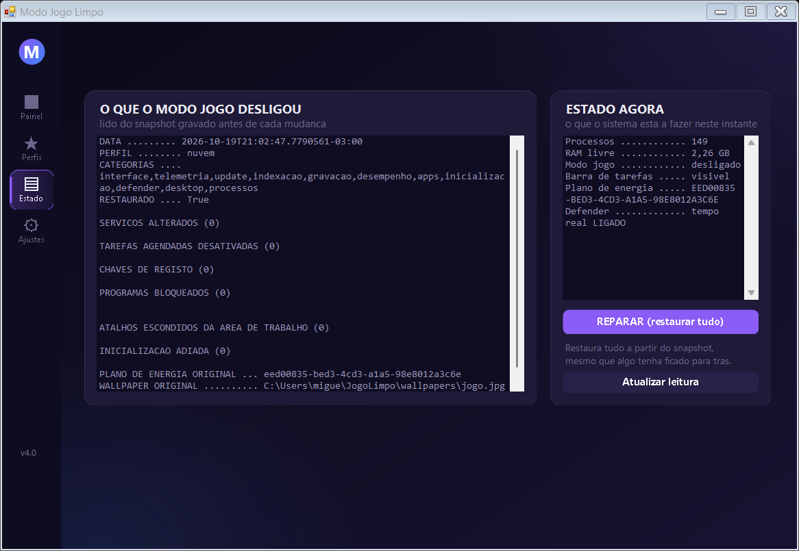
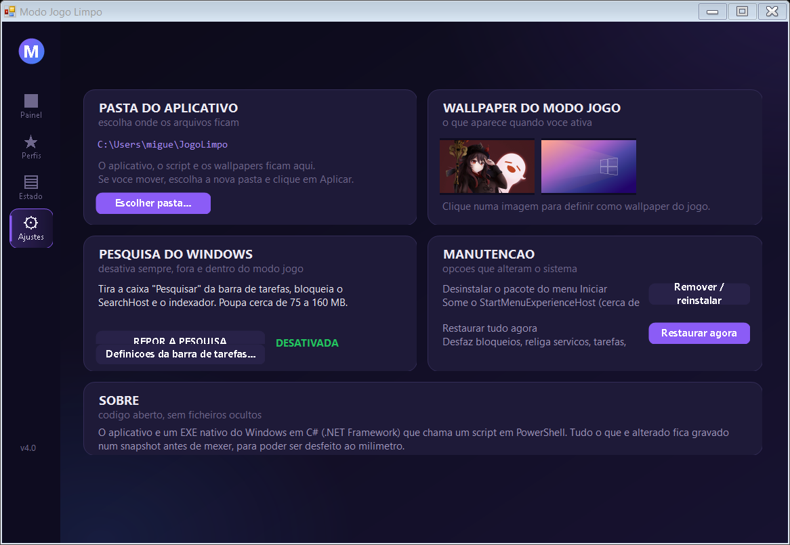
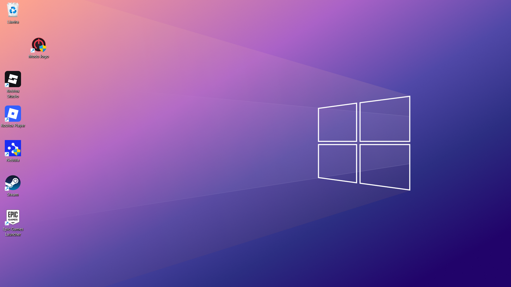

Fecha tudo o que nao e jogo, esconde a interface do Windows 11, pausa as atualizacoes e liberta a RAM - e depois desfaz tudo, ao milimetro, quando quiseres.
Windows 10 ou 11 · requer administrador · todas as versoes

Cada categoria e um interruptor. Vês o que cada uma faz antes de a ligares.
Barra de tarefas escondida, menu Inicio, barra de pesquisa, widgets, chat, Cortana e notificacoes desligados.
34 servicos de recolha, tarefas agendadas de compatibilidade e a politica de telemetria a zero.
Pausado durante a sessao. No fim volta exactamente ao estado em que estava.
O Windows Search e o indexador de ficheiros param de trabalhar.
Game DVR desligado - deixa de gravar o teu ecra em segundo plano e roubar FPS.
Plano "Desempenho Maximo", CPU minima a 100%, sem suspensao USB nem PCIe.
59 programas bloqueados: Edge, OneDrive, Copilot, widgets, bloatware do fabricante.
Adiados ate ao fim da sessao, e repostos a mesma.
Exclusoes para o Epic e o Steam, com a proteccao em tempo real desactivada durante a partida.
Fica so o icone do aplicativo, o Epic, o Steam e os teus jogos.
Fecha o que nao e jogo e para os servicos que so pesam.
Fica a trabalhar em segundo plano, de 2 em 2 segundos, a fechar o que o Windows volta a abrir.
Escolhes o ponto de partida. E podes sempre ajustar tudo a mao.
Desliga tudo. So o jogo, os launchers e o sistema minimo. O mais leve de todos.
PERFIL RECOMENDADOMantem Discord, WhatsApp e o navegador. Nao mexe no Update nem no rato.
PARA JOGAR COM AMIGOSEscolhes categoria por categoria, e a lista de programas a nao fechar.
TUDO NAS TUAS MAOSEstas regras estao no codigo e sao a razao de o aplicativo nao partir o teu PC.
A maioria dos "modos jogo" da internet desligam coisas e nunca mais ligam. Este faz o inverso: antes de mexer em
alguma coisa, grava o estado anterior de tudo - cada servico (e o seu tipo de arranque), cada tarefa agendada,
cada chave de registo, o plano de energia, as exclusoes do antivirus, os itens de inicializacao e os atalhos -
num ficheiro snapshot.json que podes abrir e ler tu mesmo.
O "modo normal" le esse ficheiro e desfaz item a item. Se o snapshot nao puder ser lido, nada e alterado.
E ha o -DryRun, que mostra exactamente o que ia ser feito sem tocar em nada.
O modo jogo ligado, medido: 148 processos e 2,9 GB de RAM livres.




Sem barra de tarefas, sem widgets, sem pesquisa, sem icones a mais. So o que interessa para jogar.

Ficam apenas os icones que interessam: o aplicativo, o Epic, o Steam e os teus jogos.
Sem instalador, sem dependencias, sem mexer no registo para instalar.
79 KB. Extrai para uma pasta tua, por exemplo C:\JogoLimpo.
Vai aparecer um pedido de autorizacao de administrador. Aceita - e preciso para mexer em servicos, tarefas e registo.
Ou usa o atalho Ctrl+Alt+J. Para voltar ao normal: Ctrl+Alt+M.
Nao. Antes de mexer em alguma coisa, o aplicativo grava um snapshot com o estado anterior de tudo. Se algo correr mal, o botao "REPARAR" na pagina Estado restaura tudo a partir do snapshot. E se o snapshot nao for legivel, nada e alterado.
Nao. E o comportamento de um modo jogo a serio. Se quiseres manter algum aberto (Discord, WhatsApp, o teu editor), escreve o nome na lista "Nao fechar estes programas" na pagina Perfis.
Porque o WebView2 - o motor de interface da Epic nova - estava a ser bloqueado. O WebView2 e tambem o motor da pesquisa do Windows 11. Ja esta corrigido, e ha um teste automatico que garante que nunca mais e bloqueado.
Podes. E MIT: usa, copia, modifica e distribui a vontade. Se quiseres que o projeto original melhore, abre uma issue ou manda um pull request. O historico do git conta como cada bug foi diagnosticado e corrigido.
Exigiria desligar servicos do sistema em todo o arranque (compartilhamento de svchost), o que obriga a reiniciar e traz risco de o Windows nao arrancar. Nao esta incluido de proposito. O que temos: 240 → 148 processos, com o sistema inteiro a funcionar.
Desligar a proteccao em tempo real da mais FPS, mas abre uma janela de seguranca durante a partida. As exclusoes para o Epic e o Steam sao sempre aplicadas. A decisao e tua, e o aplicativo diz-te o que fez.